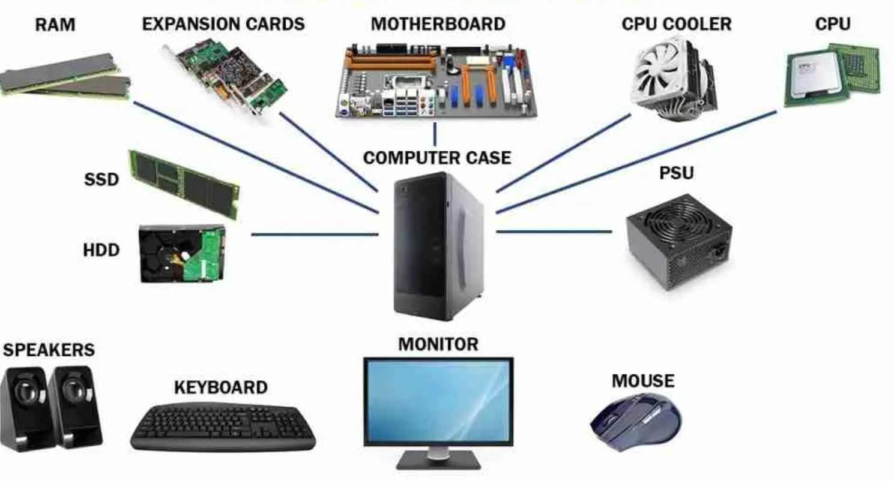
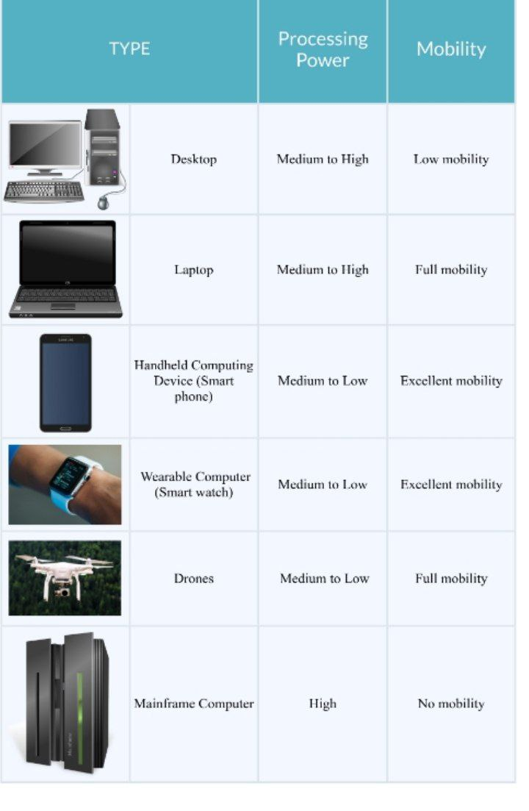

Introduction to Computers
Table of Contents
- What is a computer?
- Types of computers
- Basic parts of computer.
- what is Hardware?
- What is software?
- Uses of Computers in everyday life.
Definition of Terms
Computer:
is an electronic device that under the control of programs stores on its own memory unit or you can also define a computer as an electronic machine that process raw data to give information as output.

Types of computers
There are many different types of computers. The first computers were very large physical devices and usually took up several rooms. They were first developed around the 1940s. Over the years, the size of computers has decreased, whereas their power and efficiency have increased due to the discovery of technologies such as transistors and integrated circuits.
The Desktop or Personal Computer (PC)
also known as the desktop computer or workstation was designed with individual users in mind. Personal computers first appeared in the late 1970s, with the Apple II and IBM PC being the more popular ones. Nowadays, personal computers range from a few hundred to thousands of US dollars in price. They are also typically used in offices and community hubs and probably what you have in mind when you hear the term computer
Laptops
are small portable computers, also known as notebooks. They are nearly equivalent to personal computers in terms of their processing power and storage capacity. However, they are a bit more expensive than personal computers.
Handheld computing devices
are small enough to fit in your hand. Common examples of handheld computing devices include tablets, smartphones and personal digital assistants. Handheld computing devices often have touch screens or soft keypads, memory card storage and the ability to send files or connect with other devices via Bluetooth or Wi-Fi. You can use these to connect to accessories like headsets and keyboards. Many handheld computing devices also have inbuilt GPS technology that allows them to use the Global Positioning System to determine your location.
Wearable Computers
as the name says, computers that can be worn on your body such as smartwatches. They are usually used for health monitoring systems, communication or recreation. One main advantage of the wearable computer is its ability to allow users to multi-task.
Drones
also known as unmanned aerial vehicles (UAV), can be flown via remote control by a person on the ground or via an onboard computing system, which makes use of flight plans, sensors, and GPS technology. Drones can be equipped with different equipment, such as cameras or sensors. . Drones are used for a wide range of applications, like surveillance, search and rescue, weather and traffic monitoring, photography, video or environmental monitoring.
Mainframe computers
are one of the fastest and largest computers today. They are normally used at banks and other enterprises that require high speed and efficiency to handle many transactions. They are very expensive and rely on several high-speed central processing units (CPUs) and lots of memory.
The infographic below shows the main different types of modern computers.

Computer Hardware
they are all the components that you can see and touch, so physical parts and devices of the computer.
Types of hardware
- processing devices: example cpu
- Input devices: examples keyboard,mouse,joystick,microphones,webcams, scanner etc.
- output devices: examples monitors,printers, sound cards, video cards,speakers etc.
- Storage devices: examples USb drives, compact disk, hard disk, magnetic tape.
Software
Computer software are all applications that can be run on a computer. They are basically the instructions that tell the hardware of a computer what to do. The infographic below shows in a very simple way how the different layers and the different elements of a computer system interact.
Types of software.
System Software
are those program that control a computer's internal functions through an operating system.
- Operating system: examples are windows 10, windows 8, windows xp, windows vista, windows 11.
- Application system: examples are mavis Beacon, power Iso, Game apps, web browser, editors,
Uses of computers in everyday life
- Computers enable instant communication through email,messaging apps, social media, and video calls, connecting people globally.
- They are extensively used in education, supporting online learning, research, interactive lessons, and access to educational materials.
- Computers offer a wide array of entertainment options like gaming, streaming movies and music, social media, and creative software for digital art and content creation.
- They provide access to an immense amount of information and resources on the internet, aiding research, learning, and staying updated on news and trends.
- Computers are integral in managing traffic, logistics, navigation systems, and scheduling in transportation industries.
Questions